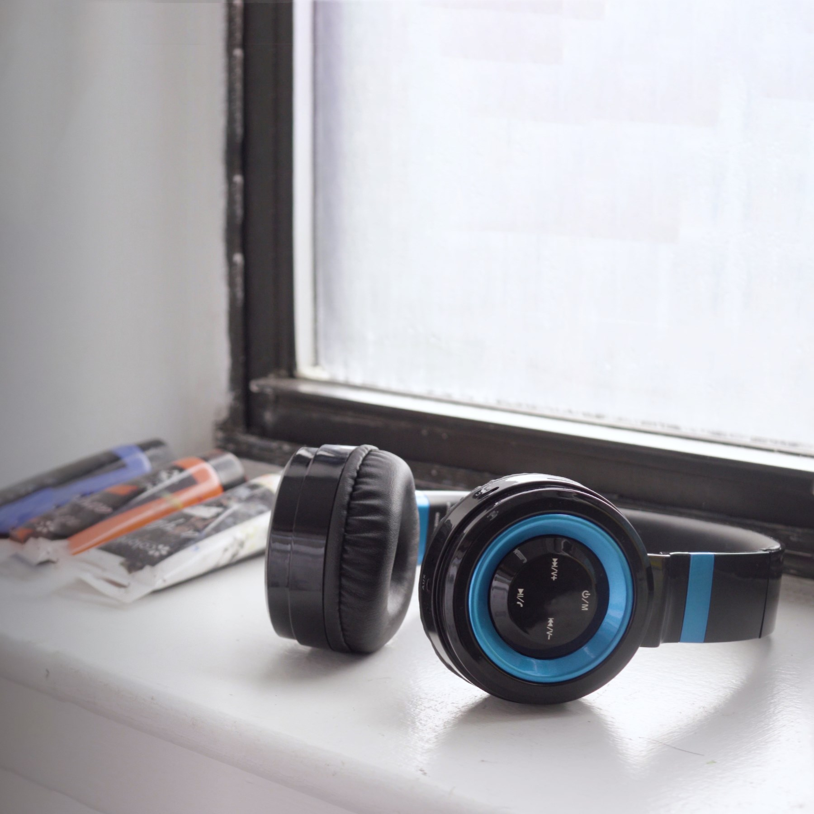

Back home
Columbia Secondary School
Time
Sep 2015 - Jun 2017
Client
CSS Student Government, CSS Musical, Contrariwise Journal of Philosophy
Role
Graphic Designer, Photographer
01. Highlights - Musical: In The Heights
prev
/
next
02. Highlights - Stepping Up Ceremony
prev
/
next
03. Highlights - Dances
prev
/
next
Related Projects

Sound Intone P6 (2017)
Cinematography, Editing, Motion Graphics
2 Train Robotics (2017)
Cinematography, Video Editing, Photography
Back to all projects
twitter
/
instagram
/
youtube
Ready to work with me? Contact me at
samsonzhang@wwsalmon.com
or social media.